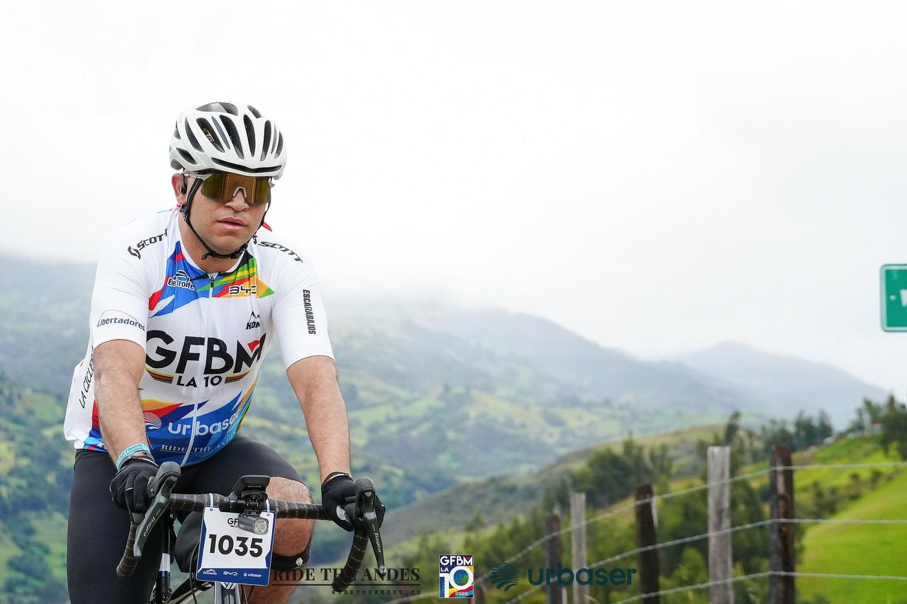
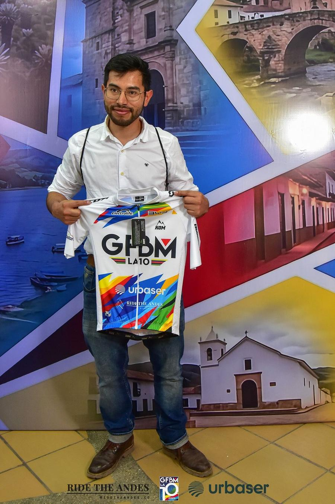
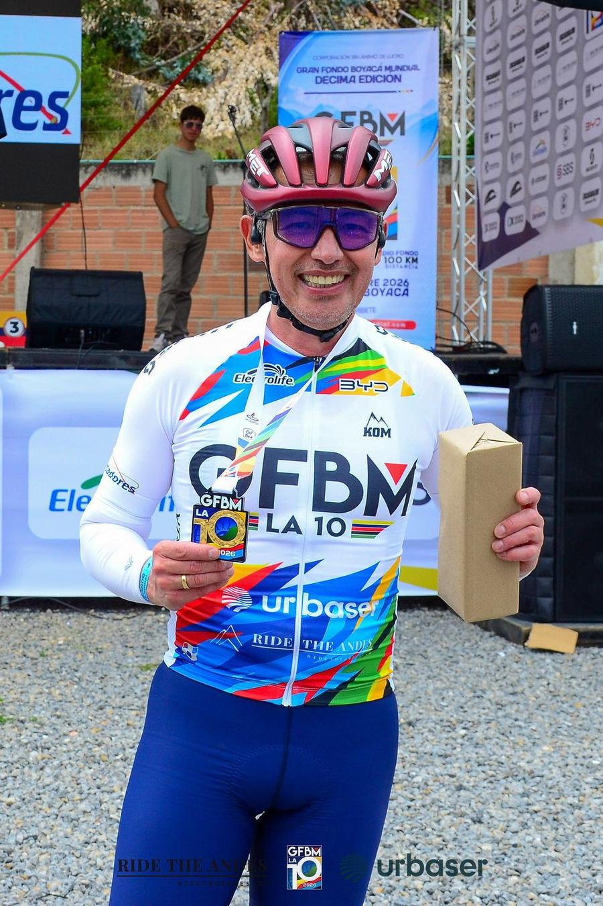
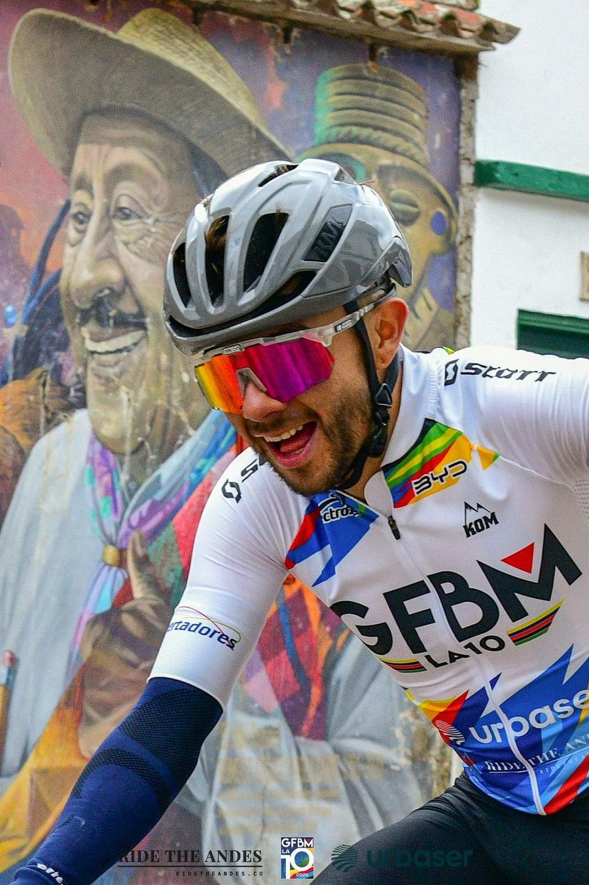
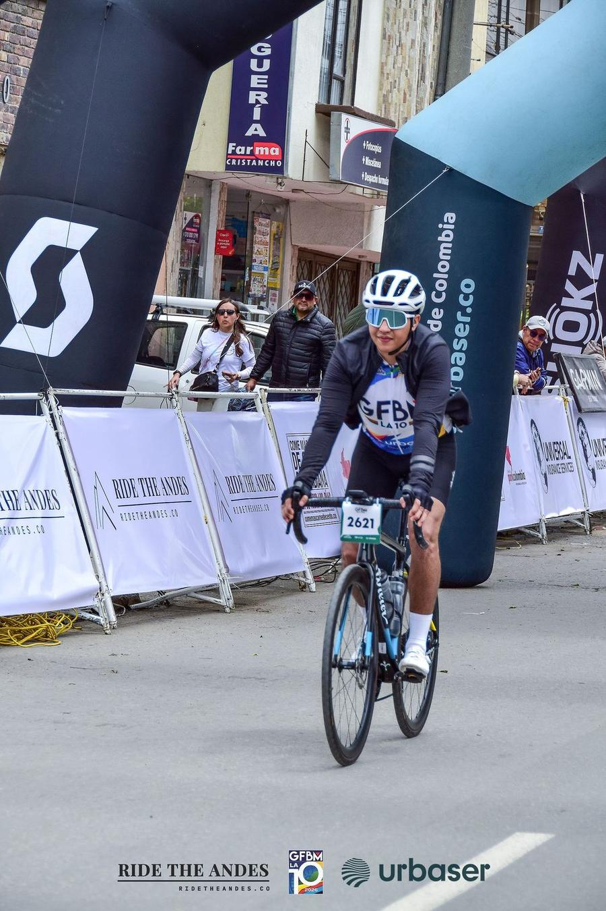

Ten editions is a long time for a gran fondo in the Andes. The Gran Fondo Boyacá Mundial began in 2016, skipped only the pandemic year, and on Sunday 11 October 2026 it started its tenth — La 10 — in Duitama, with around two thousand riders on the line and the Alto del Cogollo waiting at the far end of the day.
Our founder directs this race, so we have always been part of it. This year we were also its technology sponsor: Ride The Andes built and paid for the event's new website, ran the photo platform that put every rider's pictures online for free, and made a personal film for every finisher. This is what that looked like — and what it says about how we like to work.
01 — The raceFive clocks, one long day
The weekend opened on Friday 9 October with the Expo Bici Boyacá Mundial at Duitama's Chamber of Commerce, where riders picked up their kits; Saturday added a welcome ride. On Sunday the Gran Fondo — 143 km and 2,138 m of climbing — started at 06:00, and the Medio Fondo — 100 km and 1,100 m — twenty minutes later.
What makes the format unusual is how it is timed. Your official result is the sum of five timed segments; between them you ride with your group, refuel and talk. It makes the day a race for those who want one and a long ride with friends for everyone else:
- Punta Larga – Cargando 6.2 km · flat
- Puente Reyes – Gámeza 4.6 km · 6.2 %
- San Judas – Monguí 3.4 km · 5.8 %
- Tobasía – Alto de Tobasía 6.6 km · 6.4 %
- Alto del Cogollo 4.1 km · 6.9 %
The race has always mattered beyond the result. Across its nine previous editions it has brought 14,000 riders to Boyacá, published 490,000 free photos, generated an estimated COP 22,000 million for the local economy and donated COP 80 million; its surplus goes, in full, to the Asociación de Obras Sociales en beneficio de la Policía Nacional.

02 — The websiteFrom twelve seconds to one
We rebuilt gfboyacamundial.com from scratch as a fast, bilingual static site, and its footer now reads Sitio impulsado por Ride The Andes. Measured on a phone with Google Lighthouse, the old site scored 40 for performance and took 12.5 seconds to show its main image; the new one scores 100 and does it in 1.4 seconds, with a home page that weighs 54 KiB instead of 2,072.
Speed was only the start. Registration and online payment, an instalment plan for riders who prefer to pay little by little, the official store, the race diary, every route with its GPX file, the Sunday road closures, a page per timed segment and a tool to look up your own bib number all live there now. Five days after the race, on 16 October, registration for the eleventh edition — Sunday 17 October 2027 — opened on the same site.
03 — The photosFind yourself in sixteen thousand pictures
Free photos have been part of this race since the beginning. This year twelve photographers, captained by César "Mecho" Jiménez, shot more than 16,000 of them, and every one is online at full size at no cost. The hard part is not publishing them; it is helping two thousand people find their own.
So every picture is searchable by bib number — each number is read once by text recognition and then again by an AI model that re-checks it — or by selfie. The selfie never leaves your phone: the matching runs on the device, and only a 128-number fingerprint of your face is sent to search. Every photo also carries a button to ask for it to be taken down, and when a rider is wearing something from the official store, the photo links to it.


04 — The filmsA film for every finisher
The part we are proudest of arrived in riders' inboxes a few days after the race: Tu Gran Fondo, a personal recap film for each of the 1,780 riders with an official time. Each one carries the rider's own photo, name and bib, the route map running against their own clock, their best segment compared with the rest of the field and their final time, told by a Colombian narrator voice designed with AI — a woman's voice for the women's films. Each arrived as a private link, ready to download and share.
Rendering 1,780 short films is not glamorous work; it took the better part of a day. But it meant that a rider who finished in the last group got the same treatment as the one who won the Cogollo — which is the whole point of a gran fondo.
Sixteen thousand photos are only worth something if two thousand people can find their own.
05 — The jerseyOn the chest of two thousand riders
As a sponsor, our name travelled on the front of the official tenth-edition jersey, just below Urbaser's, along the sponsor strip printed on every race photo, and on the barriers at the finish. It is a strange and lovely thing to scroll through a race album and find your company's name on the chest of rider after rider, on every climb of the day.


06 — Why a tour operator does thisThe same care, on a bigger stage
A cycling tour lives or dies on details nobody sees until they fail: the route file that matches the road, the van in the right place, the photo that arrives. Building the race's technology was the same job at the scale of two thousand riders instead of ten, and it is the same standard we hold on The Boyacá Traverse — down to the interactive route explorer on our home page, built from our own published routes.
The Traverse ends on these roads. On our main departure, 22–31 January 2027, its final stage rides the Gran Fondo course with the man who directs the race — in the dry season, with the climbs to yourself. In October, race week, that stage is the real thing: an official start at the eleventh edition.
Ride the Gran Fondo roads with us
Ten days, six stages, ten riders. Our main departure is 22–31 January 2027; May, August and October 2027 are open too.